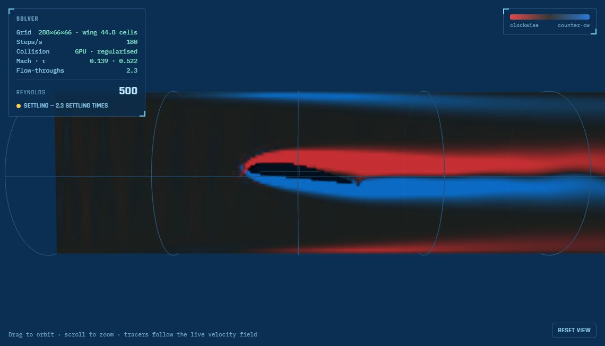
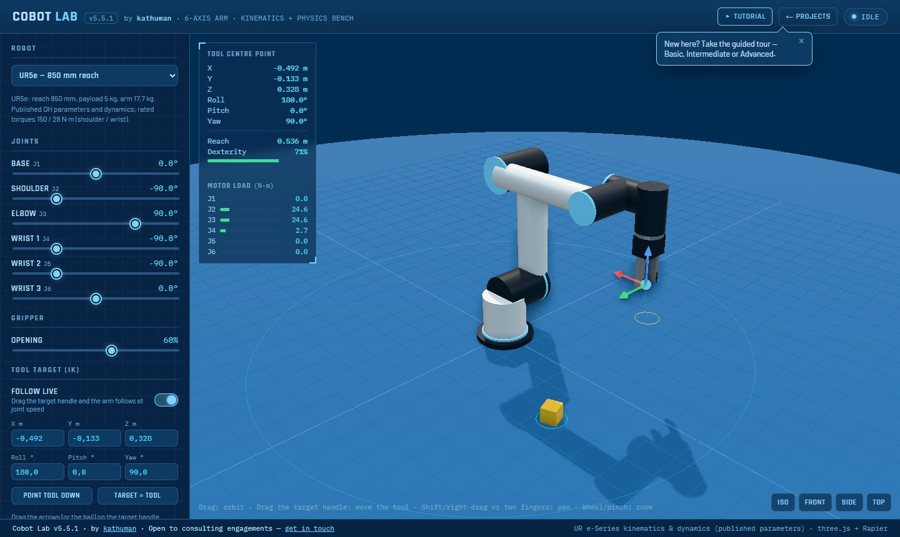
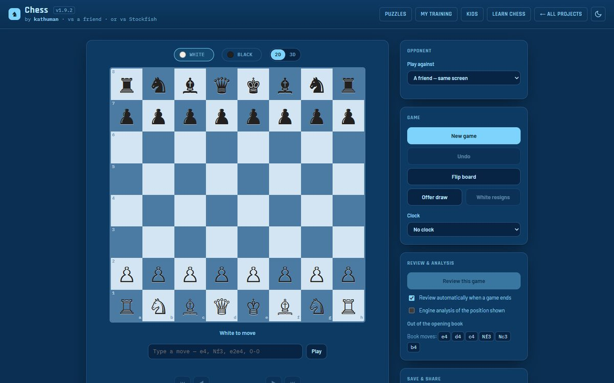
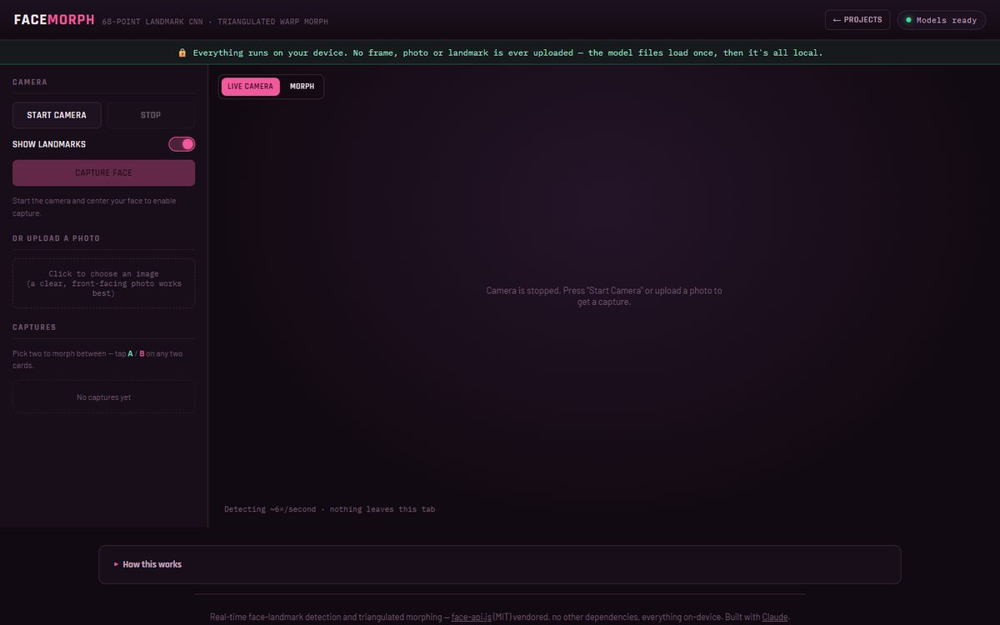
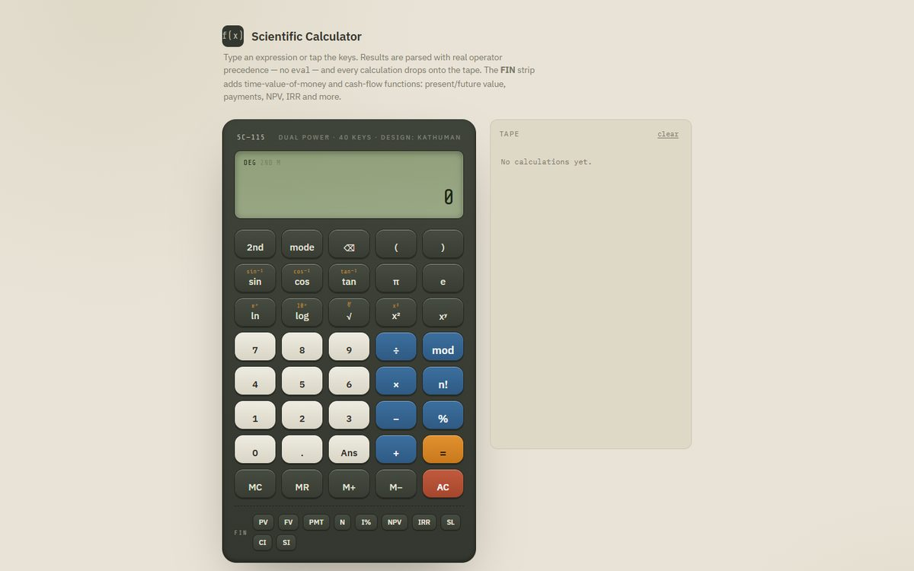
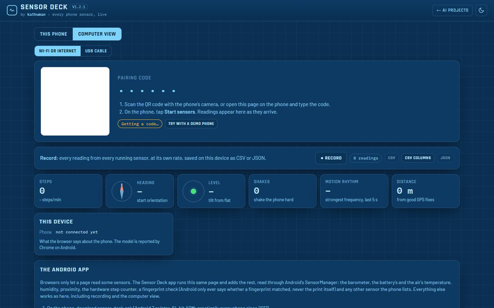
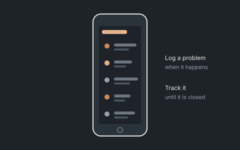

Flow and forces at the concept stage
A product or component must meet drag, lift or pressure-drop targets, and full CFD or wind-tunnel time is expensive.
DecisionWhich shape, size or operating point meets the target, and how sensitive is the result?
Work outside the consulting focus, kept here because it shows how models are built and checked. The engineering simulation practice below moved here from the expertise pages.

3D lattice-Boltzmann CFD on the GPU: spheres, STL shapes and wing sections, validated against exact solutions and published data, with a grid-convergence study in its validation report.

Universal Robots arms from their published parameters: inverse kinematics, timed motion, path planning around obstacles, physics with pick & place, URScript export and a ROS bridge.

A full chess app with all draw rules, clocks, puzzles, a course with tablebase endings, and play against Stockfish; also Chess for Kids. The rules are checked by perft against published move counts, and every course exercise by Stockfish and the endgame tablebase.

Live face-landmark detection and triangulated face morphing, entirely on-device.

A keyboard-friendly scientific calculator with a real expression parser (no eval).

Every sensor a phone’s browser can read, live in one page, with nothing to install.

A native Android app that turns a spoken or typed problem description into a structured record.
Before committing to detailed design, test rigs or equipment purchases, engineering teams need fast, transparent models of the physics involved — fluid flow and forces, robot reach and cycle times, the dynamics of a mechanism. Validated simulation makes those questions answerable early, and interactive models make the results easy to share.
A product or component must meet drag, lift or pressure-drop targets, and full CFD or wind-tunnel time is expensive.
DecisionWhich shape, size or operating point meets the target, and how sensitive is the result?
A cobot is being considered for a task, and the purchase depends on reach, payload and cycle time.
DecisionCan this arm reach every point, within its torque limits, without collisions, and in what cycle time?
A balancing, positioning or actuation concept needs its dynamics and control understood before hardware is built.
DecisionIs the concept controllable, and with what gains, motors and margins?
Layout decisions must flow into CAD and building models without re-entry errors.
DecisionCan the engineering model and the CAD/BIM model be generated from one source of truth?